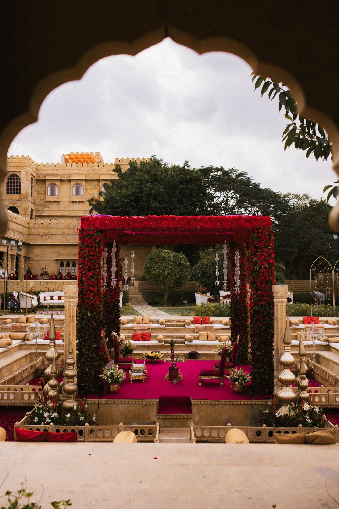
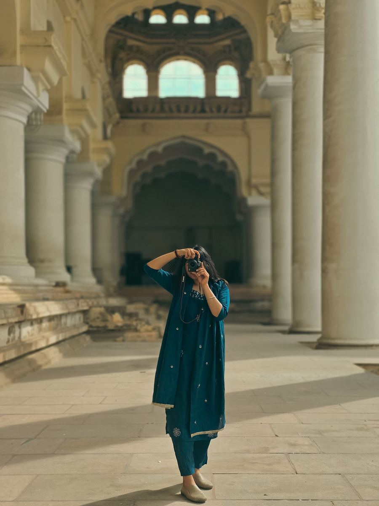
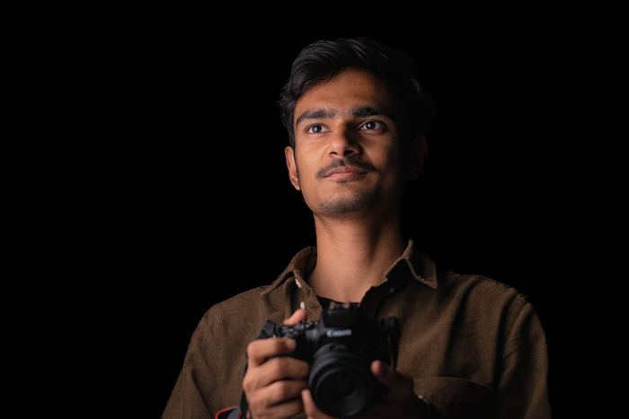
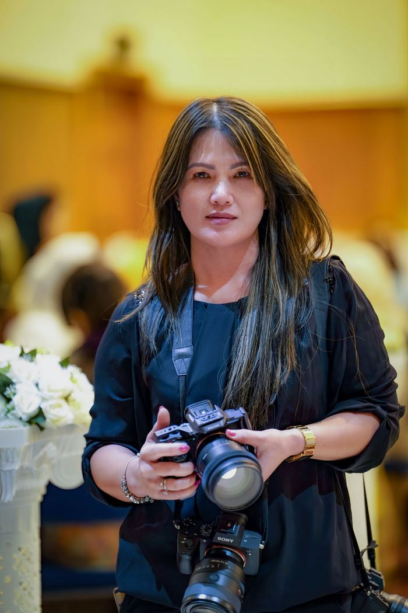
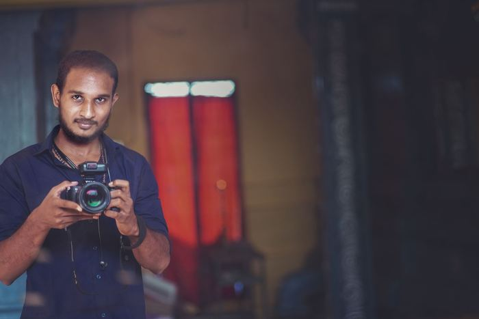
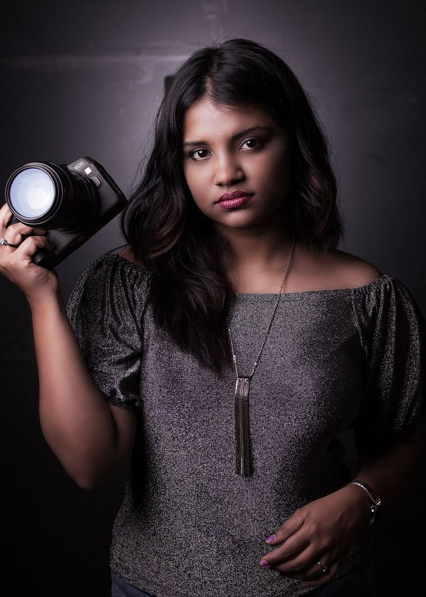
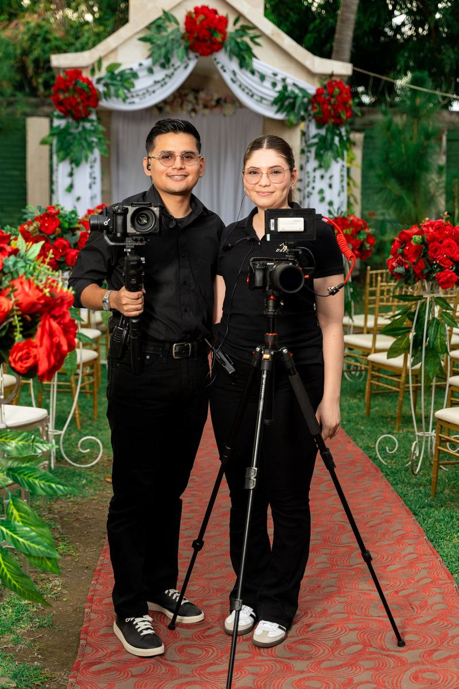
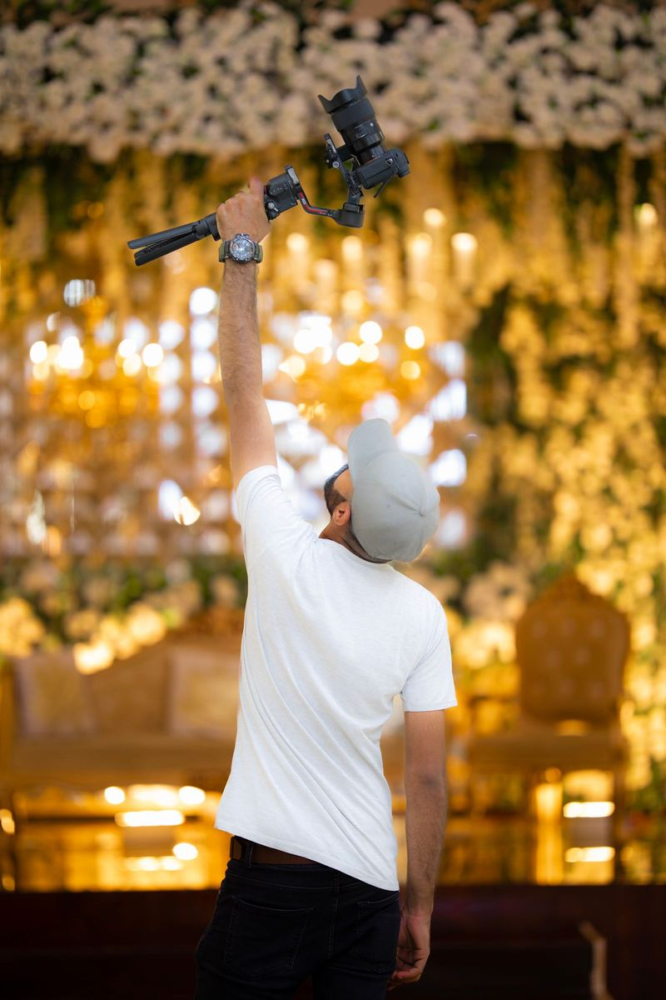

01. Presence
The Unposed Truth
We never halt a sacred phera or an intimate vidai for a re-take. We train our eyes on the quiet corners where authentic memories happen naturally — grandparents smiling, stolen glances, and unfiltered laughter.

We are a Jaipur-based collective of fourteen photographers, filmmakers and colourists documenting honest, joyful Indian celebrations without stage directions.
Our Story
Aisle & Aperture began in 2018 with two cameras, a small desk in C-Scheme, and a shared conviction: wedding photographs shouldn't look like rehearsals.
Having watched countless couples spend their own weddings waiting on photographer cues, founders Rhea Mathur and Dev Shekhawat built a team dedicated to doing the exact opposite. We don't ask mothers to repeat their tears or ask the bride to fake a laugh with her bridesmaids. We position ourselves where life happens and let every moment remain yours.
Eight years later, our team has filmed and photographed over 320 celebrations across royal forts in Rajasthan, backwater estates in Kerala, cliffside terraces in Goa, and private homes in Delhi, Mumbai and Lucknow.

Our Principles
Three convictions that guide every lens choice, shutter click and edit decision.
01. Presence
We never halt a sacred phera or an intimate vidai for a re-take. We train our eyes on the quiet corners where authentic memories happen naturally — grandparents smiling, stolen glances, and unfiltered laughter.
02. Integrity
We don't use moody brown washes or wash out delicate gold embroidery. Every photograph and film is hand-graded to preserve accurate lehenga reds, genuine haldi yellow, and honest skin tones under any lighting.
03. Harmony
We never send freelancers who haven't worked together. Our candid photographers and cinematographers operate as a unified team, respecting each other's sightlines and never crowding the couple.
Track Record
320+
Weddings Documented
Across forts, lakes, backwaters and coastal estates.
14
Full-time Artists
In-house team of photographers, editors & drone pilots.
600+
Hours Flown
DGCA-licensed aerial cinema coverage without incident.
100 yr
Archival Rating
Handcrafted linen & velvet albums rated for generations.
The Collective
Four of our core leads who personally oversee every wedding film and album proof.

Co-founder · Lead Cinematographer
Believes every wedding film needs one long, unbroken take — usually capturing the grand momentum of the baraat.

Lead Candid Photographer
A former photojournalist with a rare gift for finding and framing the quiet grandparents in every celebration crowd.

Drone Pilot · Second Shooter
Six hundred hours flown over royal forts, lakes and beaches — without ever missing an essential couple shot list.

Colourist · Film Editor
Grades every film by hand and ensures skin tones remain true, rich and authentic under warm ceremony light.
On Location
We blend in with your guests, wear black, and carry lightweight silent gear so you can forget we are even there.


Jaipur Studio
We'd love to meet you before your wedding. Visit our sunny C-Scheme studio, touch our archival prints, and discuss your celebration over tea.